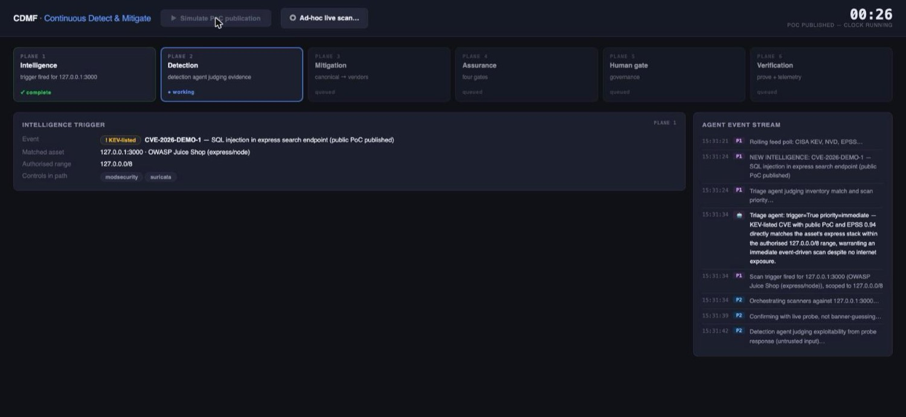

Continuous Detect-and-Mitigate Framework. A six-plane loop that takes a newly published exploit and carries it through to a verified, deployed mitigation, with AI agents doing the judgement and deterministic code doing the proving.

The question this was built to answer is a boring one that nobody has a good answer to: a proof-of-concept for a vulnerability you're exposed to gets published at 09:00. How long until you have a tested, deployed, verified mitigation in front of it, and can you prove the mitigation actually works? Most organisations measure that in weeks and cannot prove the second half at all.
CDMF is a working scaffold for closing that loop automatically, with exactly one human checkpoint in it. It is a prototype, a test project that was never put into production, but the full path runs end to end against a containerised twin.
1. Intelligence. Polls live feeds (CISA KEV among them), matches new
entries against an asset inventory, and decides whether this one is actually
yours. Most aren't. That triage is the first agent decision.
2. Detection. Orchestrates probes against the affected asset to
confirm exploitability rather than infer it from a version banner, then diffs
the result against the previous cycle.
3. Rendering. Produces one canonical mitigation object, then renders it
per vendor, a ModSecurity rule and a Suricata signature from the same source of truth,
and reports where coverage has gaps.
4. Assurance. Four gates the rule must pass: it blocks the real attack;
it survives an adversarially generated evasion set; it does not fire on legitimate
traffic; and it is hygienic (ReDoS-safe regex, no rule-ID collisions).
5. Handoff. The human gate. A work item and a rules-as-code pull
request. Nothing proceeds without a person clicking.
6. Verification. Re-verifies in production, emits telemetry, and
retires the rule when the underlying vulnerability is patched out.
A system that ingests attacker-controlled data and emits security rules is an obvious thing to attack, so it was built assuming someone would:
All scan output is untrusted input, stored as evidence and never interpreted as instructions. Generated match patterns are validated against a strict allowlist before they can be rendered. The hygiene gate lints for catastrophic backtracking, because a WAF rule with a ReDoS in it is the denial of service. And nothing reaches a production control without the plane-5 human decision. The agent can propose, it cannot deploy.
Running it for real needs somewhere safe to be wrong. A Docker Compose stack stands up a deliberately vulnerable web application behind ModSecurity with Suricata on the wire, control replicas of the production path. Probes hit the twin, rules are deployed to the twin, and the evasion set is fired at the twin. The hero metric the demo ends on is mean time to verified mitigation, which is the only version of that number worth quoting.
Because "we'll write a WAF rule" is where vulnerability management quietly stops being rigorous. The rule gets written, someone eyeballs it, it goes live, and nobody ever tests whether it can be trivially evaded, which, in my experience of getting past them, it usually can. Automating the loop was interesting; automating the adversarial testing of your own mitigation was the part actually worth building.